💡 琉森獨旅行前懶人包
🛑 琉森獨旅防雷與隱藏密技
🚰泉水王國的免費供水
瑞士的水費不便宜，在超市買瓶裝水要 CHF 1-3。但琉森老城區遍布著 200 多個歷史噴泉，這些噴泉流出來的都是無污染的優質阿爾卑斯礦泉水，完全可以直接裝水飲用。出門隨身攜帶環保杯，省錢又環保！
🚌遊客卡 Visitor Card 密技
琉森當地公車單程票價達 CHF 4.40。但只要入住琉森市區任何合法飯店、旅舍或膠囊旅館，就能免費拿到一張 Luzern Visitor Card。憑卡可無限次免費搭乘市區 (Zone 10) 的所有巴士與電車，還有各種旅遊優惠。若住宿業者沒有email過來，千萬記得要索取！
🗺️ 必做體驗：琉森 11 大絕美景點
琉森是一座集精緻中世紀老城與震撼湖光山色於一體的袖珍城鎮。以下整理出你此生必訪的 11 大自然與人文奇景：
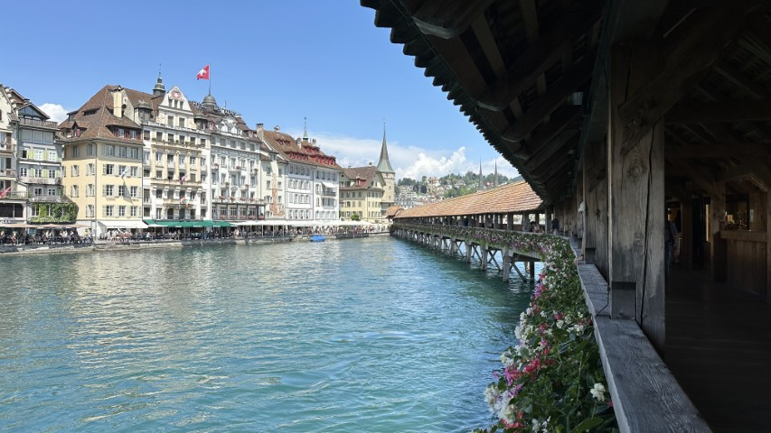
1. 卡貝爾木橋 (Kapellbrücke)
卡貝爾木橋是琉森最具代表性的歷史地標，建於14世紀，為歐洲現存最古老的木造廊橋。廊橋頂部橫樑彩繪著琉森的建城歷史與宗教故事。漫步於橋上，夏日橋畔開滿了繽紛的天竺葵，襯托著河水與遠處老城石板街，黃昏時分的景色更是溫馨迷人，是獨旅不可錯過的明信片風光。
💭 Bryan 親測：雖然瑞士其他地方也有，但這裡會放上花朵等裝飾，配上波光粼粼的湖泊非常有感覺！
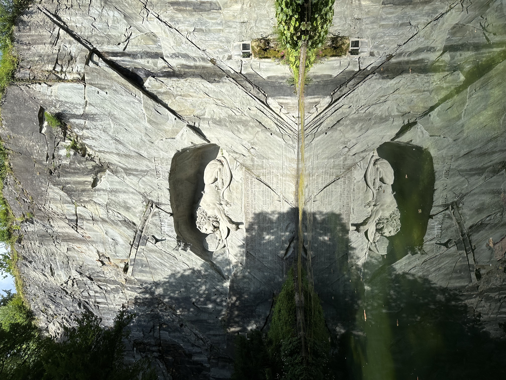
2. 垂死獅子紀念碑 (Löwendenkmal)
這座刻在巨岩上的紀念碑被馬克吐溫譽為世界上最悲傷的雕像。雕像描繪了一隻右肋插著斷矛、面露痛苦的瀕死獅子，用以哀悼在法國大革命中為了守護法王路易十六而英勇犧牲的瑞士衛兵。雕工細緻傳神，獅子眼角流露的悲傷與絕望極具感染力，是感受瑞士歷史與雕刻藝術的經典必訪之地。
💭 Bryan 親測：池水後的獅子刻劃精緻、威武卻悲傷，別具一格。
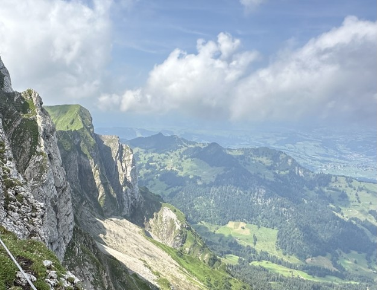
3. 皮拉圖斯山 (Mount Pilatus)
皮拉圖斯山又被稱作火龍之山，是慢城周邊最具傳奇色彩的名山。搭乘世界上最陡峭的齒軌鐵路直達海拔兩千多公尺的山頂，能眺望壯麗的阿爾卑斯群峰與多折的琉森湖全景。夏季最適合體驗包含遊船、火車與懸空吊纜的金色環遊。山頂常有高山阿爾卑斯長號表演，能享受純粹的瑞士高山氛圍。
- 持 STP (瑞士旅遊卡)：遊船與城內公車免費，齒軌火車與纜車 50% 折扣。
- 持 半價卡：全程享 50% 半價。
💭 Bryan 親測：我走金色環遊。人太多了，但超斜爬升的體驗與之後沿著山脊、登上山峰的探險與風景真的太棒了！另外纜車下山後還有類似山訓場體驗的遊樂設施，下次去一定要玩到！
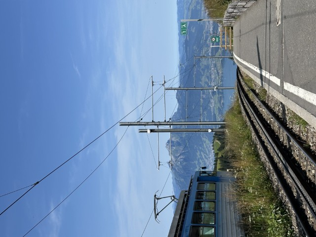
4. 瑞吉山 (Mount Rigi)
被譽為山巒皇后的瑞吉山，是瑞士最受歡迎的休閒度假勝地。這裡擁有歐洲第一條登山齒軌鐵路，鐵路兩旁是翠綠的阿爾卑斯牧場與錯落的小木屋。登上山頂觀景台，能享受360度的超廣角視野，將多達13個湖泊與白雪皚皚的阿爾卑斯山脈盡收眼底。
- 持 STP (瑞士旅遊卡)：享有極致 0 元福利！全程 100% 免費 (直接上車)。
- 持 半價卡：享 50% 半價。
💭 Bryan 親測：我當時的路線：Luzern搭船到Weggis搭纜車到Kaltbad搭火車到Kulm山頂，下山搭火車直到Arth-Goldau再搭公車直衝Stoos。山脊線的火車真的很特別，在山頂還能看著火車從地平線(應該說山平線嗎?)浮現。
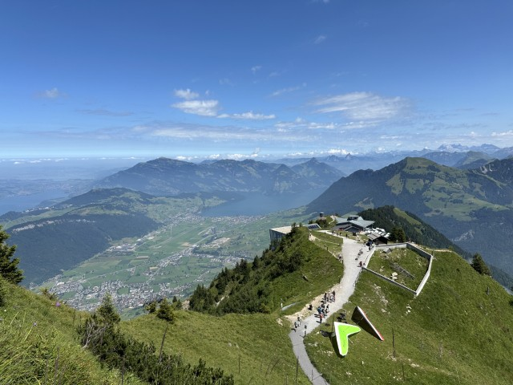
5. 石丹峰 (Stanserhorn)
以世界首創的雙層敞篷纜車聞名的石丹峰，是尋求獨特纜車體驗者的必訪景點。遊客可以站在沒有車頂的露天二樓平台，迎著清涼的高山微風，360度俯瞰周邊群山與波光粼粼的十座湖泊。山頂設有旋轉餐廳與平緩的健行環線，能輕鬆漫步並尋找土撥鼠的蹤跡。
- 持 STP (瑞士旅遊卡)：全程 100% 免費 (直接上車)。
- 持 半價卡：享 50% 半價。
💭 Bryan 親測：雙層敞篷纜車真的超酷的。人多時一定要排第一個衝上去。另外第一段的火車記得去領搭乘時間的牌子。
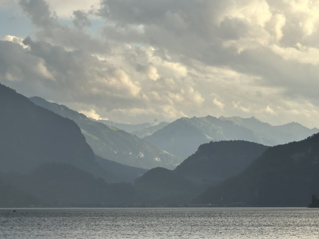
6. 琉森湖遊船 (Vierwaldstättersee)
琉森湖是瑞士境內最具詩意的高山湖泊。搭乘歷史悠久的復古輪槳蒸汽船或現代感十足的豪華遊艇，在靜謐的湖面上破浪前行。兩岸是陡峭拔高的白堊紀岩壁與掩映在森林中的湖畔別墅，在甲板上點一杯咖啡或在地啤酒，吹著山風欣賞湖光山色，是療癒身心的絕佳體驗。
- 持 STP (瑞士旅遊卡)：100% 免費 (直接把交通船當觀光船無限搭乘)。
- 持 半價卡：享 50% 折扣。
💭 Bryan 親測：琉森湖真的超～級～美～一定要來遊船！每個湖之間都是由窄窄的山口聯繫，會有景色豁然開朗的舒爽感。陰晴不定時也非常推薦，看到山嵐瞬息萬變非常壯闊！而且因為我買瑞士旅遊卡，根本把交通船搭成觀光船吃到飽！哦對了，生日當天交通船免費搭乘唷！
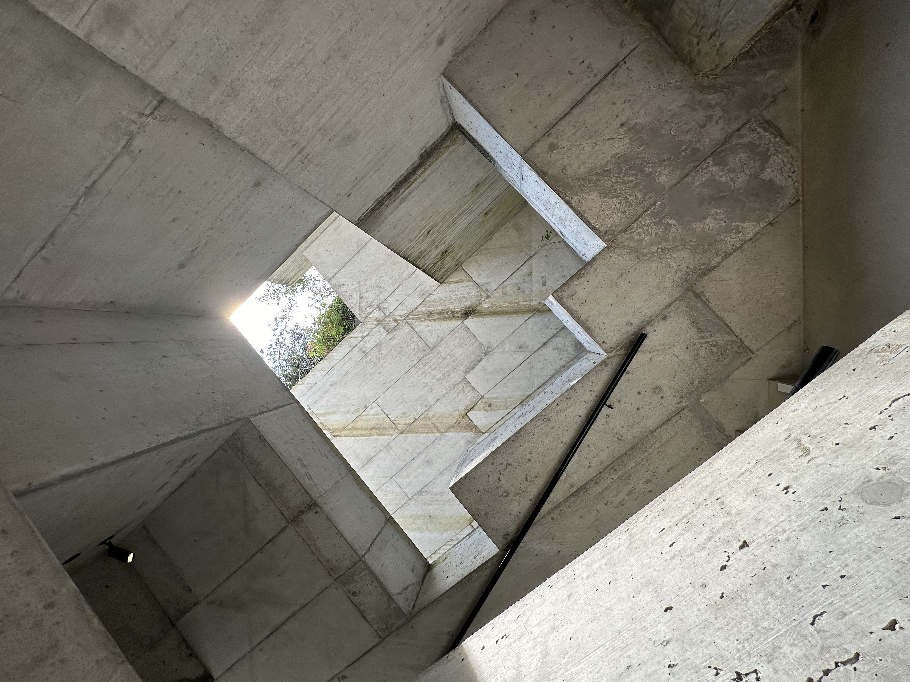
7. 冰河公園 (Gletschergarten)
位於獅子紀念碑旁，展示了兩萬年前冰河時期留下的巨大壺穴與貝殼化石古蹟。園區內最新啟用的地下岩石步道，利用多媒體光影投射出極具科幻感的岩石地心探索體驗。後方還有歷史悠久的鏡子迷宮，極具趣味性，能讓人短暫迷失在虛實之間，是完美的雨天備案景點。
- 持 STP (瑞士旅遊卡)：100% 免費入場。
- 持 半價卡：❌ 無折扣。
💭 Bryan 親測：原本想說怎麼一個城市裡會有冰河，沒想到別有洞天！園區很大，能探索地下冰河互動體驗、還有古色古香陳列各種考古探險發現的房屋，真的很推薦！
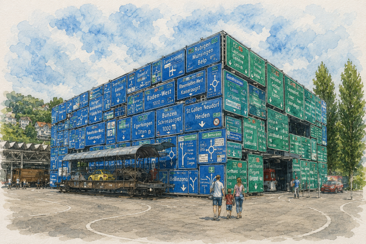
8. 瑞士交通博物館 (Verkehrshaus)
這是瑞士最大且互動性最強的博物館，展示了人類交通工具的演進史。館內分為火車、航空、航海與路面交通等展區，有大量的模擬駕駛器與實體退役載具可供體驗，甚至還有專屬的巧克力冒險之旅。展覽內容生動有趣，非常適合花上一天時間探索。
- 持 STP (瑞士旅遊卡)：門票享 50% 折扣。
- 持 半價卡：❌ 無折扣。
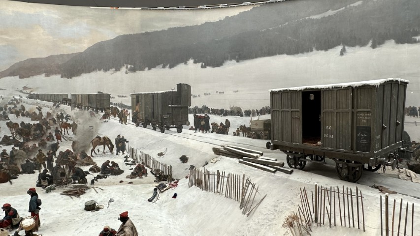
9. 布爾巴基全景館 (Bourbaki Panorama)
布爾巴基全景館是全球現存少數最具規模的 360 度巨大全景壁畫館。這幅創作於 19 世紀的巨幅環形壁畫，栩栩如生地重現了一戰前普法戰爭中，瑞士人無私救援法國受難軍隊的感人歷史場景。透過震撼的立體透視與精緻的細節刻畫，讓人彷彿親臨戰火紛飛的冰天雪地，是深度感受瑞士人道主義精神與體驗早期 3D 視覺震撼的隱藏文藝景點。
- 持 STP (瑞士旅遊卡)：100% 免費入場。
- 持 半價卡：❓無資料。
💭 Bryan 親測：一堂蠻意外的歷史課，以為瑞士只有冰川深谷，但不要忘記也有戰爭歷史的沉重面向。
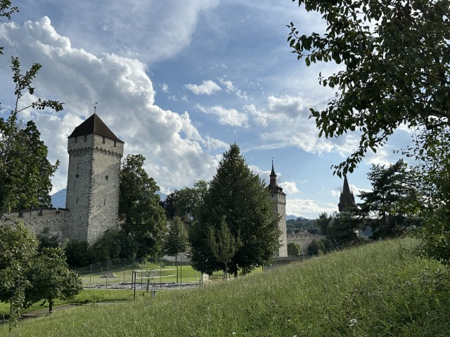
10. 穆塞格城牆 (Museggmauer)
穆塞格城牆是環繞琉森老城區的中世紀古防禦工事，建於 14 世紀，目前仍完好保存著九座巍峨的瞭望古塔。沿著古老而神祕的城牆石階登高，可以免費俯瞰整座琉森老城的磚紅屋頂、靜謐流淌的羅伊斯河以及遠處波光粼粼的湖景。其中最著名的齊特塔（Zyt）更擁有琉森最古老的公共時鐘，是俯瞰全市與拍攝日落的絕佳免費制高點。
💭 Bryan 親測：有中世紀城牆又有高山湖泊，根本戳中我的心！而且是免費景點，登塔上去風景絕佳！
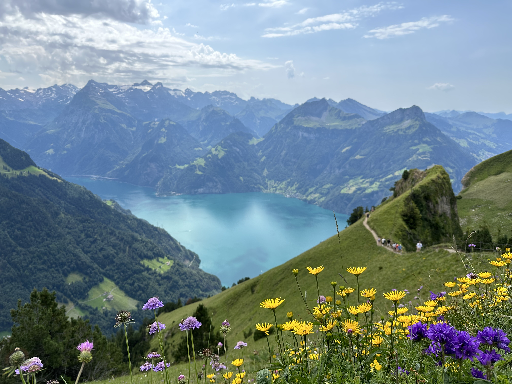
11. 施圖斯山 (Mount Stoos)
施圖斯山是坐落在琉森湖畔的高山世外桃源，最著名的是其擁有金氏世界紀錄「全球最陡峭的滾筒齒軌火車」，爬升坡度高達 110%。登頂後是一個禁止汽車通行的安詳山村，夏季綠草如茵、牛鈴陣陣，秋季則常能見到震撼的雲海絕景。這裡的刀刃山脊步道舉世聞名，更是持瑞士旅遊卡（STP）可以免費體驗齒軌列車的超高性價比登山冒險天堂。
- 持 STP (瑞士旅遊卡)：齒軌火車免費，加購吊椅纜車特惠價 CHF 36。
- 持 半價卡：齒軌火車 半價（CHF 11.60），加購吊椅纜車特惠價 CHF 46。
💭 Bryan 親測：能上道我在瑞士最喜歡的山脊線步道，能同時拍到山脊線與背景的琉森湖，絕了！
🏔️ 必去經典纜車與步道之交通攻略（含蘇黎世聯外交通）
在瑞士獨旅，大眾運輸與登山纜車的接駁非常關鍵。以下為你嚴選三條從琉森出發、涵蓋全瑞士最經典的景觀與登山環線，並詳細拆解聯外交通與城內接駁：
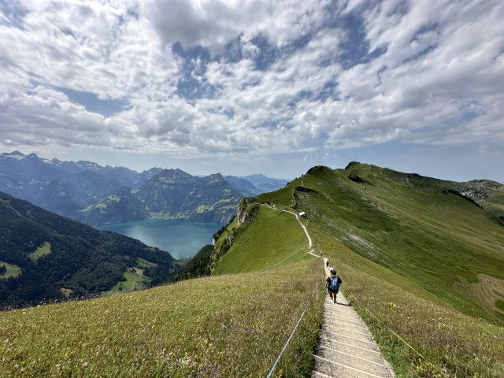
1. 施圖斯脊線步道
沿著狹窄的脊線健行，兩側是陡峭的斜坡與無邊的阿爾卑斯雪山，俯瞰宛如藍寶石的琉森湖。步道設有安全鎖鍊，雖然地勢險峻但維護良好，登上險峻的山脊稜線，能將驚心動魄的 360 度全景視野盡收眼底。
- 持 STP (瑞士旅遊卡)：齒軌火車免費，加購吊椅纜車特惠價 CHF 36。
- 持 半價卡：全程享 50% 半價（特惠價 CHF 46）。

2. 瑞吉山全景步道
沿著廢棄高山窄軌鐵路改建的路線，平緩寬敞且多為輕鬆微下坡。沿途可 360 度俯瞰楚格湖與琉森湖絕美山水。整體路線規劃非常健全成熟，是能完美放鬆身心、享受阿爾卑斯純淨自然風光的頂級健行天堂。
- 持 STP (瑞士旅遊卡)：享有極致 0 元福利！遊船、齒軌火車、高空纜車全程 100% 免費。
- 持 半價卡：享全程 50% 半價。
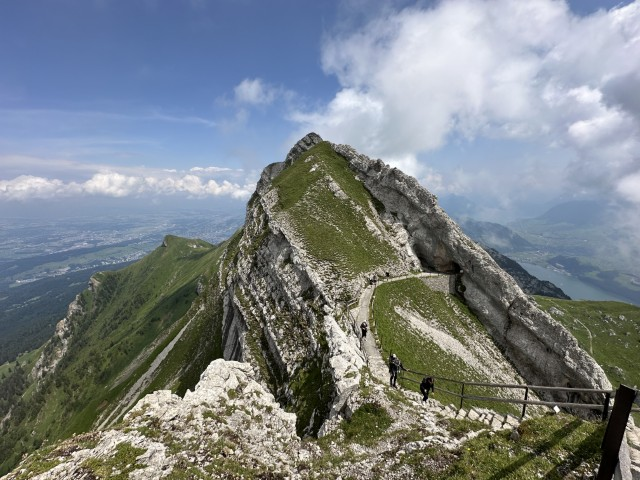
3. 皮拉圖斯山「金色環遊」
皮拉圖斯山的金色環遊（5/11 - 10/18）是琉森最具特色、結合遊船、齒軌火車與飛龍高空纜車的環狀登山接駁路線。全路線包含齒軌、纜車、公車及遊船多重享受，是全方位暢玩火龍之山的終極指南。
- 持 STP (瑞士旅遊卡)：湖上遊船與城內公車完全免費，齒軌火車與飛龍纜車段享 50% 折扣。
- 持 半價卡：全路線皆享 50% 半價。
- 湖上游： 琉森站前碼頭搭蒸汽船至 Alpnachstad (75分)。
- 陡火車： 轉乘世界最陡齒軌火車 (48%坡度) 直達山頂 (30分)。
- 飛龍纜： 自山頂搭「龍之飛翔」大纜車與小纜車降至 Kriens (30分)。
- 公車回： 出了 Kriens 站步程 5 分鐘，搭 1 號公車直達回琉森車站 (15分)。
🚆 琉森聯外交通全攻略
琉森位於瑞士地理心臟位置，鐵路網路極為發達且班次極其準點。無論是作為旅遊基地，或是從瑞士其他主要城市當天往返，搭乘國鐵（SBB）前往琉森都非常順暢便捷：
從蘇黎世出發 (Zürich)
班次最密集🛫 起點蘇黎世中央車站 (Zürich HB) / 蘇黎世機場 (Zürich Flughafen)
🏁 終點琉森火車站 (Luzern Bahnhof)
⏱️ 時間直達火車約 40–50 分鐘 (每 30 分鐘發車)
從伯恩出發 (Bern)
田園景觀線🛫 起點伯恩中央車站 (Bern Bahnhof)
🏁 終點琉森火車站 (Luzern Bahnhof)
⏱️ 時間直達火車約 1 小時 (每小時發車)
🛏️ 住宿建議：精選安全且高性價比的獨旅避風港
| 🛏️ 住宿飯店 / 青旅 | 🔗 預訂連結 | 💰 平均房價參考 | ⭐ 旅客評分 | 💡 站長推薦原因 |
|---|---|---|---|---|
| 💭 Bryan 親測 Capsule Hotel - Lucerne Old Town 數位膠囊旅館 📍 Google Maps | CHF 50 - 80 / 晚 | 約 8.8 / 10 隱私性高，極乾淨 |
瑞士首家數位膠囊旅館。高隱私科技艙、衛浴一塵不染。距獅子紀念碑步程3分鐘，市區極佳平價首選。 | |
| Luzern Youth Hostel 經典青年旅館 📍 Google Maps | CHF 45 - 65 / 晚 | 約 8.0 / 10 高CP值，附設餐廳 |
琉森經典高性價比青旅。提供平價宿舍與私人房，環境整潔且氣氛悠閒。離主要景點與火車站較遠。 | |
| Barabas Lucerne 監獄主題青年旅館 📍 Google Maps | CHF 45 - 80 / 晚 | 約 8.1 / 10 老城中心，體驗特別 |
真實百年監獄改建的趣味青旅。保留原始鐵門牢房結構。近木橋與車站，附設日式居酒屋，適合愛獵奇體驗者。 | |
| Capsule Hotel - TheLAB 未來實驗室膠囊旅館 📍 Google Maps | CHF 50 - 80 / 晚 | 約 8.5 / 10 近火車站，科技感強 |
充滿實驗室風格的新型膠囊旅館。距離車站極近。太空艙設計感十足，提供極佳睡眠隱私與高科技智能體驗。 |
🍝 瑞士美食指南：經典起司鍋與老城代表菜
🍽️ 琉森與瑞士經典 2 大美食
瑞士高山與湖泊圍繞的環境，孕育出高熱量的溫暖系乳酪與肉類料理，以下是來到琉森必吃的在地美食：
盧森小酥包 (Luzerner Chügelipastete)
這是琉森歷史悠久的節慶名菜。在精緻的烤酥皮盒中，填入醃製小牛肉、磨菇與葡萄乾做成的奶油白醬，口感外酥內軟。
瑞士經典起司鍋 (Cheese Fondue)
瑞士的國菜！融合了 Gruyère 與 Emmental 起司，並加入大蒜與白葡萄酒一同在陶鍋中加熱，用長叉麵包沾著吃。
🎒 獨旅實戰：琉森友好餐廳與平價清單
琉森除了高級名店外，老城與火車站周遭也有許多對單人用餐極度包容，或是能幫你大省預算的餐飲首選。以下精選 5 間實測優質店家：
| 🍴 餐廳 / 烘焙甜點 | 💰 價格水平 | 📍 交通位置 | 💡 站長為何推薦 |
|---|---|---|---|
| Manora Restaurant Luzern 📍 在地圖開啟 | 平價至中價位 百貨景觀餐廳 |
Manor 百貨頂樓
Weggisgasse 5
|
🛡️ 獨旅友善：極高
百貨頂樓自選餐館。菜色現做新鮮、選擇超多。戶外露台能俯瞰老城與湖景，寬敞自由且無單人用餐壓力。 |
| Twiny Station 📍 在地圖開啟 | 極低價位 在地輕食首選 |
老城區核心街區
Grendelstrasse 19
|
🛡️ 獨旅友善：極高
超人氣傳奇三明治老店。現點現做熱壓三明治份量極大、價格親民。強烈推薦獨旅背包客外帶去湖畔野餐！ |
| Pastillo Pasta Pizza 📍 在地圖開啟 | 低到中價位 高CP值義式簡餐 |
火車站與老城區間
Pilatusstrasse 14
|
🛡️ 獨旅友善：高
主打平價美味的現烤披薩與義大利麵。出餐極迅速、點餐流程簡單，店內氣氛輕鬆溫馨，單人用餐快速便捷。 |
| Coop Restaurant Luzern City 📍 在地圖開啟 | 極低價位 秤重自助神殿 |
Coop City 百貨內
Kasernenplatz
|
🛡️ 獨旅友善：極高
全瑞士最省錢的獨旅用餐神殿。熟食、沙拉採取自助秤重，15瑞郎內飽餐。空間寬敞自由，完全無注目壓力。 |
| Café Bar Lokal 📍 在地圖開啟 | 中等價位 文青河景咖啡廳 |
羅伊斯河畔第一排
Unter der Egg 2
|
🛡️ 獨旅友善：高
精緻的羅伊斯河畔文青咖啡館。氛圍慵懶愜意，提供優質咖啡與輕食。非常適合獨旅者坐在窗邊看著河景發呆。 |
🇨🇭 瑞士獨旅生存避雷箱
補給：黃昏橘標折扣
瑞士外食每餐動輒 CHF 30-50。想省錢的獨旅者可以在每日下午 17:00 之後，前往 Coop 或 Migros 尋寶。
作息：週日超市全面公休
瑞士極度重視勞動權益，除了少數觀光景點的紀念品店，週日全瑞士的超市（Coop/Migros）與藥局均會完全休息，街頭商店大門深鎖。
交通：瑞士旅遊卡與半價卡
瑞士是歐洲少數極度依賴「專屬交通卡」的國家。大眾運輸與纜車極其昂貴，Swiss Travel Pass 與 Half Fare Card 是旅客的必備神卡。
必備神器：SBB Mobile & Grand Train Tour App
SBB Mobile 是全球公認最佳的大眾運輸 App，能買特惠早鳥票 (Supersaver)。另外強烈推薦下載 Grand Train Tour of Switzerland App！

Bryan | Europe Solo Guide
「獨旅不是孤單，而是給自己一場完整的自由。」
熱愛穿梭在歐洲老城區的石板路上與壯麗群山間。目前已獨自走訪 41 個歐洲國家，致力於將複雜的交通、住宿與隱藏景點，轉化為有溫度的獨旅攻略。希望這篇文章能幫你省下找資料的時間，把精力留給旅途中的美好。
✉️ 聯繫我 / 合作邀約